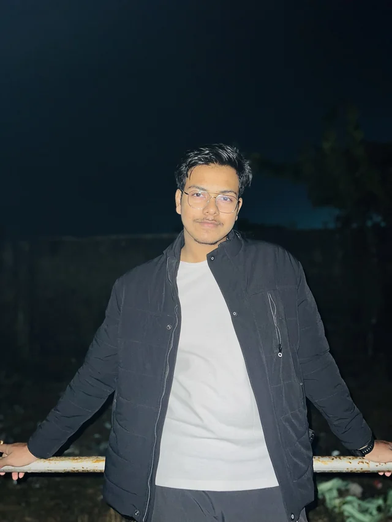
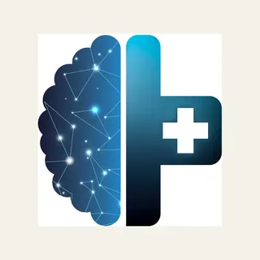
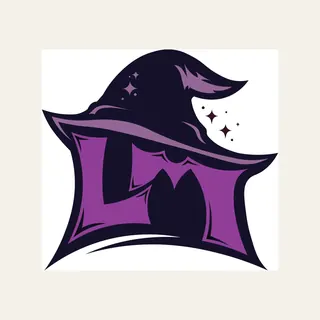

Marks & crests
Logo suites, e-sports crests and the lockup rules that keep them sharp on a jersey and a favicon.
Identity, visual systems and launch design for brands, creators, businesses and the worlds they build. Sixteen chapters, sixteen visual languages, one hand.
I run creative at Asabcore. Everything here is mine, start to finish — no team, no studio behind me. Universities, agencies, medical and training platforms, e-sports orgs, YouTube channels, e-commerce shops and individual creators: crests, logo suites, product UI, poster runs, thumbnails, merch. Sixteen chapters, each set in the visual language the project was actually born in, because one dialect can only take one kind of brief.

A modular identity that survives 12 px favicons and 12 metre banners.
Marks, grid, motion signature, and a governance doc thin enough that people read it.
E-sports 26% · Creators 24% · Product 20% · E-commerce 16% · Print 14%
Four deliverables.
No slide decks about slide decks.
Logo suites, e-sports crests and the lockup rules that keep them sharp on a jersey and a favicon.
Storefronts, channel art, thumbnails and overlays — built as templates the client can run themselves.
Match-day posters, drop campaigns and apparel, prepped to real ink limits and real print budgets.
Campaign direction for launches and tournaments — briefing, shoot or render, through final grade.
Audit, interviews, a look at every competitor in the bracket. The brief you arrive with is rarely the brief you leave with.
Three routes, each pushed far enough to be genuinely different. No safe middle option padding the deck.
The chosen route becomes files the client can actually run — templates, tokens, export presets, rules.
Press checks, build reviews, QA on real devices. Everything lines up or it goes back on the plate.
Joined ASAB as Senior Designer in Q1 2026 and became Creative Director in Q1 2026. Designed the page, and continue to design the UI/UX across LSM and the digital product around it — one system, one repo, one source of truth, drawn by one person.
| Field | Value |
|---|---|
| Role | Creative Director |
| Tenure | Q1 2026 → Present |
| Studio | One — no team |
| Surfaces | Web / Product / Print / OOH |
| Systems | 1 core, 1 product line |
| Release | v4.2 — shipped |
A digital product in R&D: 3D simulation, telemetry and a product surface designed to support the experience end to end. I designed the page and continue to design the UI/UX across the digital product — in a language that boots rather than opens.
“A crest, a storefront, a thumbnail set and a poster run are the same problem in four coats: make it recognisable at a glance, then make it survive being used by someone who isn't me.”
Unused routes, dead ends and the plates that got better after they failed.
StockFrench Speckletone, 118 gsm. Two passes, hand-fed, drum drift left in on purpose.
Why keep itThe archive is the argument. It shows the routes that were considered and rejected, which is the only proof that the chosen one was a decision.
EditionPrinted twice a year, 60 copies, sent to clients and to whoever asks nicely.
Six tools, one hand on all of them. The stack is boring on purpose — what matters is the handover: a client should be able to run the brand for a year without emailing me.
Stingers, overlays and brand motion — the reels in chapter 14 were cut here.
Thumbnails, key art and every composite that has to survive a feed.
Crests and logo suites, drawn on grid and kerned by hand.
Product UI and design tokens. Source of truth for anything that ships as a screen.
InDesign, Lightroom, Premiere — whatever the deliverable actually needs.
3D marks, product renders & visual experiments.
BAMMC Cultural Seminar Competition · Reel Competition Category

96px56px32px18px01The cross does two jobs in one shape — a clinical cross, and a figure leaning in to help. Nothing is illustrated; the second reading is cut into the counter.
02Stroke weights sit on a six-unit grid, so the mark keeps the same colour at 16 px that it has at a metre. The counter stays open at favicon size — that was the test it had to pass.
03Two blues and black. The gradient runs one way only, so the mark still works flat when a printer refuses gradients.
04The lockup is fixed: wordmark on the mark's cap-height, one mark-width of air, no vertical variant. Fewer options is why it still looks right a year on.

96px56px32px18px01Silhouette first. The hat was drawn solid black at 24 px and only earned detail once the shape alone was already recognisable.
02The LM ligature is cut out of the hat's own shadow, so monogram and icon are one object rather than a letter parked in front of an icon.
03One purple at two values plus paper. A third colour and the edges vanish in jersey embroidery, which is where this crest actually lives.
04The sparkles are the only decoration, and they sit on the composition's diagonal so they can be deleted without breaking the mark.
Restaurants, hostels, software, weddings, tobacco, care platforms, e-sports. Different rooms, one discipline. Every mark is cut to the same square, on the same paper, at the same size — so what you are comparing is the drawing and nothing else.
Thumbnails, covers and match-day art get judged at the size of a fingernail, in a feed, next to nine others shouting the same thing. One idea per frame, one subject, and type heavy enough to survive being 210 pixels wide.
Three cuts. A logo sting built so the mark resolves on the beat rather than after it, a launch film for asabcore.com, and a product post cut square for feed. Muted by design — none of these were made to be heard.
The mark, extruded. Four years of it on jerseys, thumbnails, cartons and shopfronts.